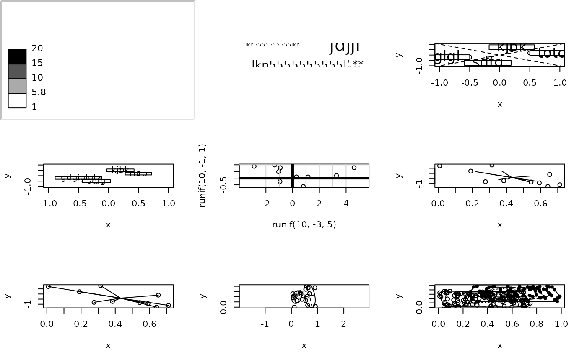

Graphical utility functions
scatterutil.RdThese are utilities used in graphical functions.
Details
The functions scatter use some utilities functions :
- scatterutil.base
defines the layer of the plot for all scatters
- scatterutil.sco
defines the layer of the plot for sco functions
- scatterutil.chull
plots the polygons of the external contour
- scatterutil.eigen
plots the eigenvalues bar plot
- scatterutil.ellipse
plots an inertia ellipse for a weighting distribution
- scatterutil.eti.circ
puts labels on a correlation circle
- scatterutil.eti
puts labels centred on the points
- scatterutil.grid
plots a grid and adds a legend
- scatterutil.legend.bw.square
puts a legend of values by square size
- scatterutil.legend.square.grey
puts a legend by squares and grey levels
- scatterutil.legendgris
adds a legend of grey levels for the areas
- scatterutil.scaling
to fit a plot on a background bipmap
- scatterutil.star
plots a star for a weighting distribution
- scatterutil.sub
adds a string of characters in sub-title of a graph
- scatterutil.convrot90
is used to rotate labels
Author
Daniel Chessel, Stéphane Dray stephane.dray@univ-lyon1.fr
Examples
par(mfrow = c(3,3))
plot.new()
ade4:::scatterutil.legendgris(1:20, 4, 1.6)
plot.new()
ade4:::scatterutil.sub("lkn5555555555lkn", csub = 2, possub = "bottomleft")
ade4:::scatterutil.sub("lkn5555555555lkn", csub = 1, possub = "topleft")
ade4:::scatterutil.sub("jdjjl", csub = 3, possub = "topright")
ade4:::scatterutil.sub("**", csub = 2, possub = "bottomright")
x <- c(0.5,0.2,-0.5,-0.2) ; y <- c(0.2,0.5,-0.2,-0.5)
eti <- c("toto", "kjbk", "gdgiglgl", "sdfg")
plot(x, y, xlim = c(-1,1), ylim = c(-1,1))
ade4:::scatterutil.eti.circ(x, y, eti, 2.5)
abline(0, 1, lty = 2) ; abline(0, -1, lty = 2)
x <- c(0.5,0.2,-0.5,-0.2) ; y <- c(0.2,0.5,-0.2,-0.5)
eti <- c("toto", "kjbk", "gdgiglgl", "sdfg")
plot(x, y, xlim = c(-1,1), ylim = c(-1,1))
ade4:::scatterutil.eti(x, y, eti, 1.5)
plot(runif(10,-3,5), runif(10,-1,1), asp = 1)
ade4:::scatterutil.grid(2)
abline(h = 0, v = 0, lwd = 3)
x <- runif(10,0,1) ; y <- rnorm(10) ; z <- rep(1,10)
plot(x,y) ; ade4:::scatterutil.star(x, y, z, 0.5)
plot(x,y) ; ade4:::scatterutil.star(x, y, z, 1)
x <- c(runif(10,0,0.5), runif(10,0.5,1))
y <- runif(20)
plot(x, y, asp = 1) # asp=1 is essential to have perpendicular axes
ade4:::scatterutil.ellipse(x, y, rep(c(1,0), c(10,10)), cell = 1.5, ax = TRUE)
ade4:::scatterutil.ellipse(x, y, rep(c(0,1), c(10,10)), cell = 1.5, ax = TRUE)
x <- c(runif(100,0,0.75), runif(100,0.25,1))
y <- c(runif(100,0,0.75), runif(100,0.25,1))
z <- factor(rep(c(1,2), c(100,100)))
plot(x, y, pch = rep(c(1,20), c(100,100)))
ade4:::scatterutil.chull(x, y, z, opt = c(0.25,0.50,0.75,1))

par(mfrow = c(1,1))